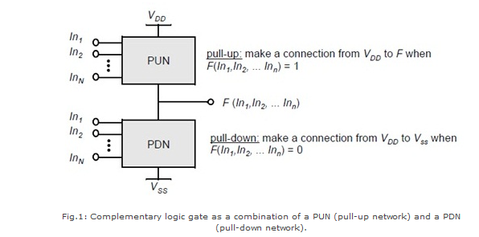
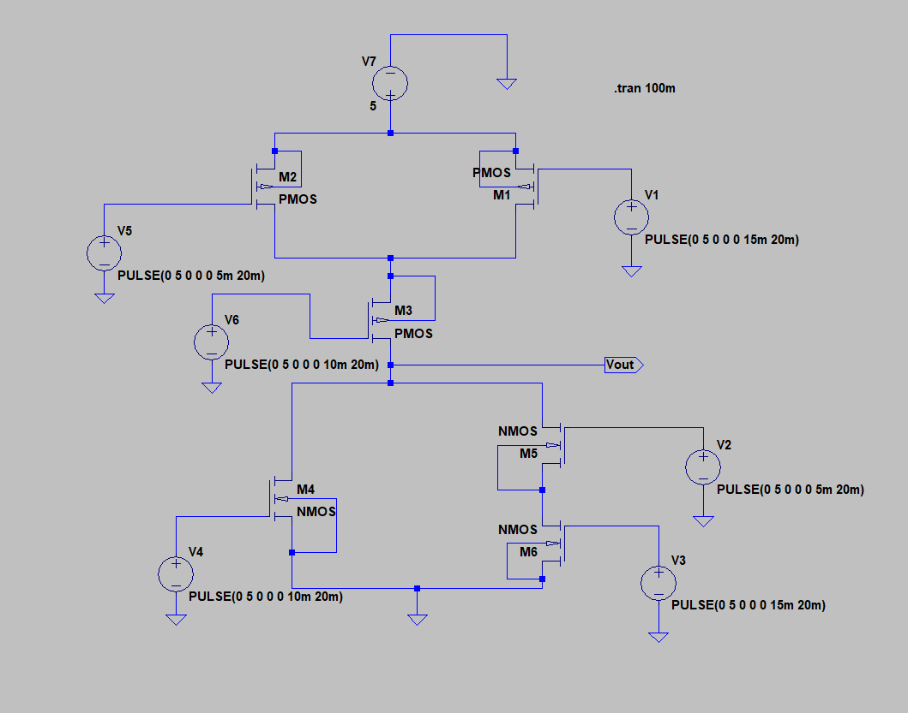
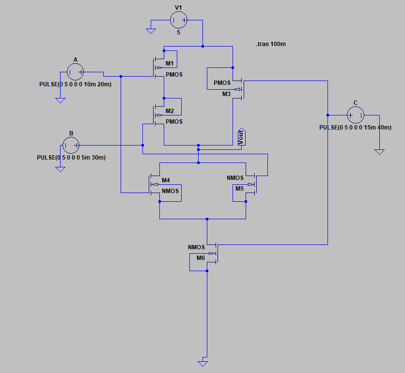
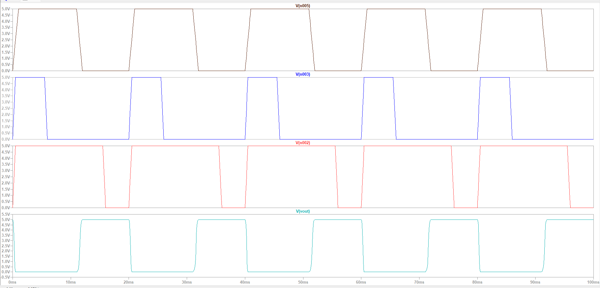
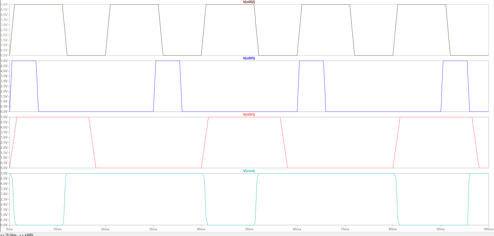

Name: Batch: B-3
Roll No: Date:4/8/26
EXPERIMENT NO. 04
To Implement and Analyze Logical Expression Using Statics CMOS Design Style
OBJECTIVE: To implement (A+BC)’ using static CMOS design style
SOFTWARE: LT Spice
THEORY:
Static logic is a design methodology in integrated circuit design where there is at all times some mechanism to drive the output either high or low. For example, in many of the popular logic families, such as TTL and traditional CMOS, there is always a low-impedance path between the output and either the supply voltage or the ground. The most widely used logic style is static CMOS. A static CMOS gate is a combination of two networks, called the pull-up network (PUN) and the pull-down network (PDN). The function of the PUN is to provide a connection between the output and VDD anytime the output of the logic gate is meant to be 1 (based on the inputs). Similarly, the function of the PDN is to connect the output to VSS when the output of the logic gate is meant to be 0 (based on the inputs). The PUN and PDN networks are constructed in a mutually exclusive fashion such that, one and only one of these networks is conducting in the steady state.

PROCEDURE:
Open LT Spice
In Files Menu---click on new schematics
Go to Components---Select each required component----do connections.
Simulate edit command: add required voltage level
Simulate the schematic --- in Tools menu ----go to Simulation
LT Spice window gets opened. There Right click on the black window---click on add trace.
CIRCUIT:


OUTPUT:


CONCLUSION: